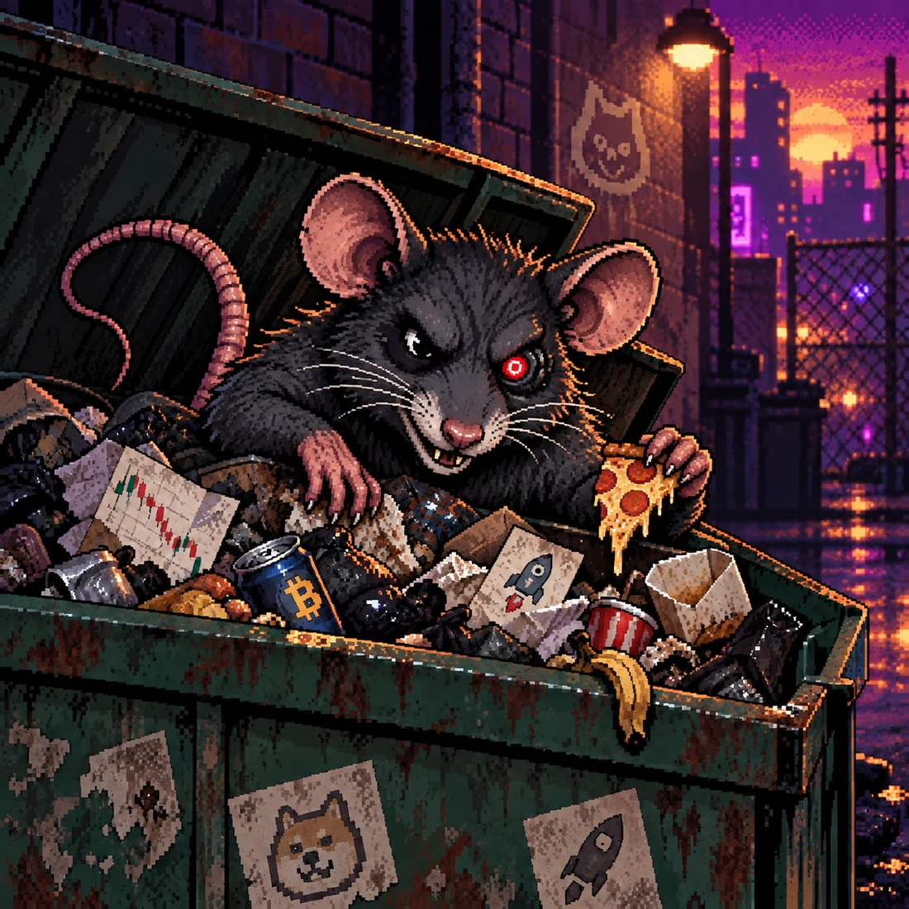

01
BAG HITS BIN
Capture the exact launch event, block, transaction, token and ArcPad-reported creator address.
INPUT / LAUNCH EVENTA MEMECOIN ATTACHED TO A USEFUL RAT
He gets the scraps.
You get the receipts.
New launches hit the dumpster. BINRAT follows the ArcPad-reported creator address, digs through older bags, and keeps the evidence.

01 / THE DUMPSTER
Coverage describes the record, never the token. Open a bag to inspect the evidence.
02 / HOW HE DIGS
Capture the exact launch event, block, transaction, token and ArcPad-reported creator address.
INPUT / LAUNCH EVENTLink that reported creator address to earlier ArcPad launches without pretending it proves a human identity.
LINK / REPORTED ADDRESSCollect factual observations: prior outcomes, distribution, metadata and anything still unresolved.
RECORD / OBSERVATIONSBind the result to evidence and coverage so the joke can never outrank the record underneath it.
OUTPUT / BOUND EVIDENCE03 / TOKEN STATUS
The dumpster comes first. The evidence stays public. A token should unlock better tools for digging.
$BINRAT IS NOT LIVE.HOT GARBAGE feed
Public receipts
Basic Trash Trails
Real-time alerts & watchlists
Deeper trails & saved
investigations
Exports, API limits & advanced filters
A direction, not a launch promise. Access, depth and convenience may differ. Factual evidence never does.
CLAIM BOUNDARY
BINRAT reports what he found. It does not prove a token is safe, a creator is honest, two addresses belong to the same human, or a price will go up. Missing evidence stays missing.